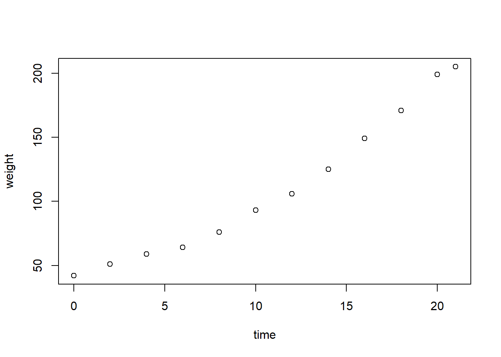
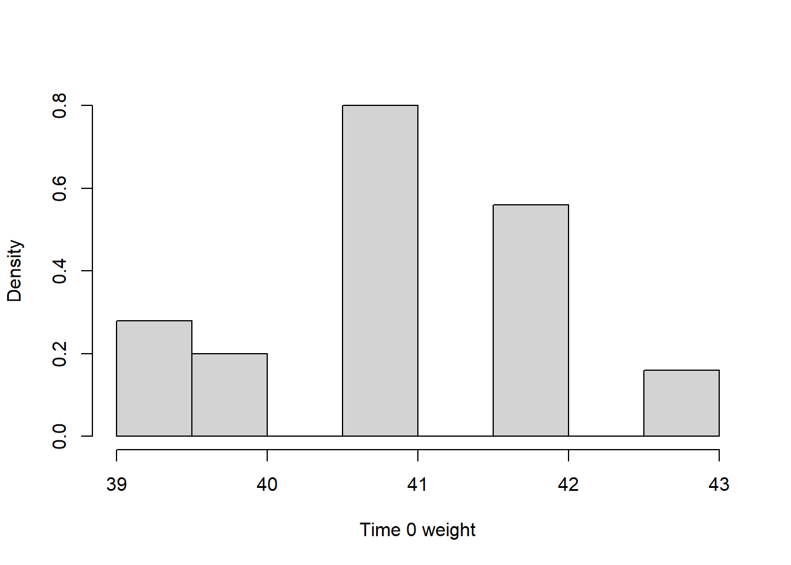
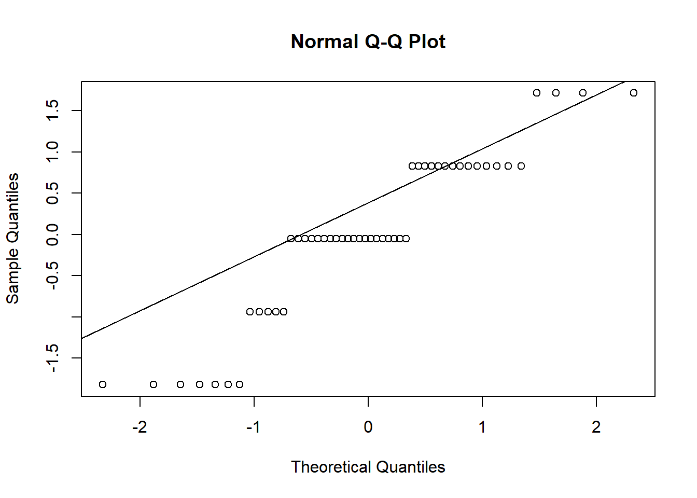

Chapter 2 Data Analysis and Statistical Inference
In this first chapter we define and discuss some important concepts regarding data and scientific investigation.
2.1 Data, Experiments, and Studies
We encounter numerical summaries of information constantly in our everyday lives and sort through these in order to make all sorts of decisions. In this section we will formalize the concept of data connected to scientific study. Broadly speaking, data is anything we observe that is relevant to answering a question of interest, i.e., data is tacitly assumed to be informative about the question.
Three types of studies in which data are collected and analyzed are in designed, interventional experiments, observational studies, and exploratory studies. The following illustrations help to differentiate these two types of studies. One difference we will see is all about timing—experiments start with a question of interest and then are designed to answer the question. Exploratory data analysis is often done using data collected with no particular question in mind, or some other question besides the current one. Another difference is that experiments require interventions—imposed changes of behavior or conditions on the individuals in the experiment—while observational studies do not include such interventions.
2.1.1 James Lind’s Scurvy Trial
Clinical trials are familiar designed, interventional experiments. A famous, early example is James Lind’s Scurvy trial. Lind was a doctor aboard a British ship. Several sailors with him were suffering from scurvy. He selected 12 sailors in similar, poor condition, and assigned to pairs of them 6 different treatments (the intervention). The two who received oranges and lemons to eat recovered fully; those who received apple cider fared next best. Lind specifically wanted to understand which treatments would be most effective at curing scurvy and planned an experiment to answer his question. His selection of like sailors and random, paired treatment assignment constitute early examples of randomization and control in experimental design.
2.1.2 Framingham Heart Study
Named for Framingham, Massachusetts, where the participants were first recruited, this was a long-running observational study of Americans aimed at understanding risks associated with heart disease. Participants agreed to medical testing every 3-5 years, from which the study researchers concluded a number of important findings, such as cigarette smoking substantially increases the risk of heart disease. There are no interventions; the researchers simply observe the patients and make conclusions based on how the patients choose to live, e.g., tobacco use.
2.1.3 Harris Bank Sex Pay Study
93 salaries of entry-level clerical workers who started working at Harris Bank between 1969 and 1971 show men were paid more than women. (From The Statistical Sleuth, reproduced from “Harris Trust and Savings Bank: An Analysis of Employee Compensation” (1979), Report 7946,Center for Mathematical Studies in Business and Economics, University of Chicago Graduate School of Business.)
2.1.4 Large, Aggregated Data Sets
There are now many large “data sets” recording all sorts of information about consumers, e.g., data obtained by Google and other technology companies whenever consumers use their sites, apps, or devices. There are many potential use cases for such information; for instance, such data has proven helpful for targeted marketing of specific products. Such applications may be termed exploratory research—these are characterized, in part, by exploration/examination of data that was originally collected for some other purpose. In other words, the “data” was collected with either no question or some other question in mind.
2.1.5 Study Concepts
The above examples illustrate several key concepts related to scientific studies.
- Research question - There is always a reason researchers go to the trouble of collecting and analysing data; they have an important question they want to answer. For example, what can sailors do to prevent scurvy?
- Experimental units/Subjects - the research question usually references people, things, animals, or some other entity that can be studied in order to answer the question. When these are observed and measured then they are called experimental units or subjects. In the context of interventional experiments these usually refer to the units of randomization; see below.
- Data - we are inundated with information, numbers, figures, and graphs in our everyday lives. Is this data? Anything information gathered to answer a particular research question can be considered data. Relevancy to a research question is key.
- Intervention - When James Lind gave different foods to sick sailors he was making an intervention, and his goal was to study the effect of his interventions on the sailors well-being. Experiments include one or more interventions, whereas observational studies do not feature any interventions on the part of the researcher.
- Randomization - When researchers intervene, they should apply their interventions randomly with respect to subjects. In experiments the experimental units are the entities that are randomized and given interventions.
- Response/outcome variables - studies often measure multiple variables and study relationships between them. Typically the researchers expect one variable is affected by another. The response, or outcome—like the health of sailors, or pay of workers—is the variable being affected by the intervention in an experiment or by another, independent variable in an observational study.
- Control - Researchers should try to limit the effects of variables on the response that are not of interest to the study. For example, in the gender pay study, the researchers studied only entry-level workers. They controlled for prior experience to better isolate potential sex effects on pay.
2.1.6 Randomization, control, and causation
In experiments the researcher performs one or more interventions—such as giving patients cider versus citrus fruits in Lind’s scurvy trial. The principle of randomization asserts that interventions in experiments should be assigned to experimental units randomly. When experimental units are heterogeneous—not all the same—it stands to reason that some of their differences apart from the intervention may impact the response to the experiment recorded by the researcher. Randomization is a way to even out these heterogeneities between groups receiving different interventions. That way, it is the intervention, rather than some other difference, which is responsible for substantially different outcomes. Randomization systematically accounts for heterogeneities, but the extent to which it works depends on the number of experimental units, the number of groups being randomized, and the presence of one or more important heterogeneities. For examples, consider the following:
1. Suppose in ten experimental units there is one unobserved, dichotomous trait that affects the experimental response. Three of the ten have version “0” of the trait and 7 have version “1”. Randomly split the ten into two groups of five, each group to receive a different intervention. The chance all three end up in the same group is 1/6, not ignorably small…
2. On the other hand, suppose there are 100 experimental units, half have trait “0” and half trait “1”. The chance at least 35 of either trait type end up in the same one half random split is \(\approx 0\).
Generally when an intervention is randomized over experimental units we interpret any significant difference in outcome/response between intervenion groups as having been caused by the intervention itself, as opposed to some other unobserved characteristic—these are sometimes called lurking variables or confounding variables. But, randomization is not foolproof; small sample sizes (few experimental units) and/or the presence of many confounding variables can reduce the effectiveness of randomization.
When the researcher knows about potential confounders ahead of time, the principle of blocking says experimental units should be representatively divided with respect to intervention across values of this variable. For example, if experimental units are humans both young and old, then the different interventions should be applied to equal numbers of young and old people. One way to accomplish this is to let age group be a blocking factor. In the case of a dichotomous intervention this means half of the old people will be randomly assigned to one intervention and half of the young people will be randomly assigned to one intervention—as opposed to randomly assigning half of all the experimental units to one intervention.
The principle of control states that intervention groups should be made as homogeneous as possible. When experiments are well-controlled researchers often assume that they can determine causation, and any observed differences in experimental outcome between intervention groups can be attributed to the intervention. Of course, as mentioned above, the ability of an experiment to determine causation is not all or nothing; rather, it depends on unknowns. Nevertheless, stronger controls make the results of experiments more trustworthy, and less likely to be caused by confounding variables.
Non-interventional, observational studies are not used to establish causative relationships. Rather, we say such studies establish associations between variables. For example, in the Framingham study, the researchers did not randomly assign individuals to groups of tobacco-users and non-users. Even though these days the evidence is quite strong that tobacco use causes heart disease, the bar for such a claim is much higher when the variable of interest—tobacco use—cannot be randomly assigned to experimental units. That’s not to say elements of control cannot be used. For instance, if enough data is collected, it is possible to compare tobacco-users and non-users with nearly the same ages, sexes, incomes, education, living in the same zip codes, etc. The more potential confounders are explicitly controlled, the closer such an observational study comes to a randomized experiment.
2.1.7 Populations and scope of inference
Whether conducting an experiment or collecting observational data, the units/subjects have to come from somewhere. The population refers to the set of all possible subjects—it may be finite or infinite, and it may be concrete or hypothetical. For examples, the population of current Iowa State undergraduates is well-defined, whereas the population of mouse kidney cells exists in a hypothetical sense. Sampling describes how subjects are obtained from the population for observation. Random sampling is any scheme involving selecting a subset of subjects from a larger group in some random fashion. A simple random sample of size \(n\) is obtained when every subset of \(n\) subjects from a total group is equally likely to be selected. Other types of random selection are possible, but we won’t often consider these: - stratified random sampling obtains when simple random samples from separate groups/strata are combined, e.g., a 50/50 random sample stratified by male/female can be formed by taking a simple random sample of ten males and a simple random sample of 10 females from a group of 50 males and 50 females - cluster random sampling obtains when a larger group is subdivided into smaller groups and subgroups are selected at random, e.g., a cluster random sample of Iowa high schoolers can be obtained by choosing all high schoolers who attend one of a simple random sample of Iowa high schools.
Generally, conclusions about subjects in the study—whether it is an experiment or an observational study—may be assumed to hold for the wider population as a whole when the subjects are chosen randomly. The details of this generalizability of results depend on the type of random sampling conducted; we’ll focus on the case of simple random sampling specifically. On the other hand, when subjects are not randomly sampled from the population, study results cannot be generalized back to the population. The reason is that the lack of randomness in selection implies some subsets of the population are more or less likely to be present in the sample of subjects observed, hence, that sample is not necessarily representative of the population. For an extreme example, consider a population of both young and old people and an experiment studying the effects of Covid-19. It’s well-known Covid-19 is much more harmful to old people compared to young people. So this is a potential confounder. If we select only young people to study, then we certainly cannot claim the results would be similar had we studied both young and old people.
Non-random sampling schemes are quite common because they are usually easier and cheaper to implement than random sampling schemes. A convenience sample is just what it sounds like—a rule that selects subjects that are easy to select—such as conducting a poll of your closest friends. When a non-random sample is used, remember that the results cannot be interpreted beyond the group subjects that were observed.
Sometimes a researcher intends to study one population, but obtains data from another population. This mismatch is important to identify as it can cause bias—which simply means the answer to the researcher’s question is different for the population for which data is observed compared to the intended population. As in the extreme example above, effects of Covid-19 are different in old and young populations, so the results from an experiment studying only the young are biased when viewed from the perspective of the population of old and young combined.
2.2 Data Summaries
Data may take on many forms including sound waves, images comprised of pixels/voxels, and graphs of functions/surfaces. We will almost exclusively consider data that may be represented in a tabulated format, like the following data on weights of chickens.
## weight Time Chick Diet
## 1 42 0 1 1
## 2 51 2 1 1
## 3 59 4 1 1
## 4 64 6 1 1
## 5 76 8 1 1
## 6 93 10 1 1Regardless of the type of data, few users can make sense of all the data at once; rather, we need data summaries—numbers or plots that point out important features of the whole data set.
2.2.1 Numerical Summaries
We briefly describe summaries for categorical and numerical, continuous data.
Suppose a variable \(X\) takes categorical values, e.g., \(X\in\{0,1,2,3\}\). A data set consisting of observed \(x\) values, may be summarized by tabulating proportions, i.e., of 100 observations, 0.41 were \(x=0\), 0.29 were \(x = 1\), 0.17 were \(x = 2\) and 0.13 were \(x=3\). Binary or dichotomous variables may be also be summarized by odds and odds ratios. Suppose \(Y\in\{0,1\}\). The observations \(y_1, \ldots, y_n\) may be summarized by saying \(60\%\) were \(y=1\) versus \(40\%\) \(y=0\) or, equivalently, the observed odds of \(y=1\) was \(0.6/0.4 = 1.5\). Suppose response \(Y\) is blocked by another dichotomous variable, say, undergraduate versus graduate status, and suppose the observed odds for undergraduates is 1.5 while the observed odds for graduates is 0.8. Then, the observed odds ratio for undergraduates versus graduates is 1.5/0.8 = 1.875.
In contrast to categorical data, continuous data takes values in the real numbers \(\mathbb{R}\) or some interval of real numbers. Most numerical summaries of continuous variables either measure location or dispersion. Location refers, in one way or another, to a typical or average value while dispersion refers to the spread of the values. Common measures of location are the mean, median, and trimmed mean:
- The mean of \(x_1, \ldots, x_n\) is \(\overline x = n^{-1}\sum_{i=1}^n x_i\).
- The median is denoted \(\tilde x\). Sort the \(x\)’s from least to greatest labeling them as \(x_{(1)}, \ldots, x_{(n)}\). Then, \(\tilde x = x_{(\frac{n+1}{2})}\) if \(n\) is odd and \(\tilde x = \tfrac12\left(x_{(\frac{n}{2})} + x_{(\frac{n}{2}+1)}\right)\) if \(n\) is even.
- The \(\alpha\%\) trimmed mean is the mean of the remaining \(x\) values after ignoring the smallest and largest \(\alpha\%\) of values. Roughly, the \(\alpha\%\) trimmed mean averages \(x_{(1+\alpha n)},\ldots, x_{n - \alpha n - 1}\).
- Besides the median, we may be interested in “locations” besides the center, and these could be summarized using quantiles. Observed quantiles may be defined in a number of ways. One definition says the \(\alpha\in(0,1)\) quantile is the smallest observed \(x\) value such that at least \(\alpha\%\) of observed \(x\) values are no more than \(x\).
Common measures of dispersion include the variance and standard deviation, the range, and the interquartile range:
- The observed variance of \(x_1, \ldots, x_n\) is given by \(\tfrac{1}{n-1}\sum_{i=1}^n(x_i - \overline x)^2\) and may be equivalently computed as \(\tfrac{1}{n-1}\left\{\sum_{i=1}^n (x_i^2) - n\overline x^2\right\}\).
- In the calculation of variance the \(x\) values are squared, which means the variance has units equal to the squared units of \(x\); that is, if \(x\) is measured in millimeters then its variance is measured in millimeters squared, or, e.g., dollars then dollars squared. Often the squared units are difficult to interpret. Instead, we define the standard deviation as the square root of the variance, which shares the units of the observed \(x\) variable.
- The range is the difference between maximum and minimum values, i.e., \(x_{(n)} - x_{(1)}\).
- The interquartile range (IQR) is the difference between the \(0.75\) and \(0.25\) quantiles.
2.2.2 Visual Summaries
Plots and graphs can also be used to summarize a data set or particular observed variable. Three plots we will use extensively in the course are the scatterplot, histogram, and quantile-quantile (qq) plot.
For paired observations of two variables \((x_i, y_i), \,\,i = 1, \ldots, n\) a scatterplot displays \((x_i, y_i)\) in the xy-plane. For example, see the plot of a chicken’s weight versus time from the tabulated data set above. Scatterplots are useful for assessing relationships between variables. For example, the chick’s weight increases with time, maybe in a linear or slightly quadratic fashion. 
For a single variable a histogram summarizes the distribution of its observed values by counting the numer of observations in different intervals (buckets) of values. Keep in mind that histograms with different choices of buckets may look very different. Check out this histogram of “Time 0” weights of all 23 chicks. 
A qq-plot compares the shape of a distribution of observed values to another known distribution, often the standard normal distribution. For example, make the standardizing transformation \((x_i - \overline x) / \hat\sigma_x\) where \(x_i\) is the Time 0 weight of chick \(i\), \(\overline x\) is the observed mean and \(\hat\sigma_x\) is the observed standard deviation of those values. Compute the \(\alpha\) quantile of these values or several \(\alpha\) values in \((0,1)\) along with the corresponding standard normal quantiles (z-scores). Plot the pairs of \(\alpha\) quantiles in the xy-plane. If the standardized weights are approximately normal, then the points should lie approximately on the line \(y=x\). Note that extreme quantiles are always less reliably estimated, so it is typical for the ends of the “line” to fray up or down from the diagonal.

2.3 Statistical Inference
Summarizing data sets is important because no one can make sense of more than a few numbers at a time. But, data summaries cannot by themselves answer our research questions. That is because data summaries only say something about the particular data set we observe, while our research questions concern the whole population. Recall, a major aim of experimentation is generalizing from observations to population. When we make such generalizations we often refer to them as inferences; and, statistical inferences are characterized by their careful treatment of statistical concepts, such as hypotheses, and Type 1 and 2 errors, which we discuss below.
A hypothesis is a claim or assertion about a population. These may be simple, i.e., “the population mean is 5”, or more complex, like “the population distribution of values is equivalent to a Normal probability distribution”. Notice that both of these statements are either true or false, yes or no. A hypothesis then may be called the “null hypothesis”, and its complement (opposite) the alternative hypothesis. Which is which depends on the context. We make educated guesses about the truthfulness of a null hypothesis based on observations/data. Our educated guesses may be right or wrong, but we will never know because we will never “see” the whole population. If we reject the null hypothesis as false when it really is true, then we make a Type 1 error. The opposite, keeping the null hypothesis in favor over its alternative, when it is actually false, is a Type 2 error. Ideally, we would make no errors, but that’s not possible. In fact, the two errors have an inverse relation. For example, if we adopt the rule that we always reject the null hypothesis, then we will necessarily maximize Type 1 errors but have no Type 2 errors. And, if we take the opposite approach, then we maximize Type 2 errors while making no Type 1 errors.
Much of this course will focus on constructing tests of relevant hypotheses with the property that we limit the chance of making a Type 1 error. By chance we refer to the probability distribution of the test outcome induced by random sampling of data from the population. A test that has chance no more than \(\alpha\) of making a Type 1 error is called a “level \(\alpha\) test of \(H_0\)”, the null hypothesis.